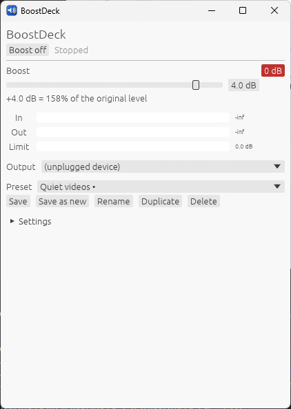
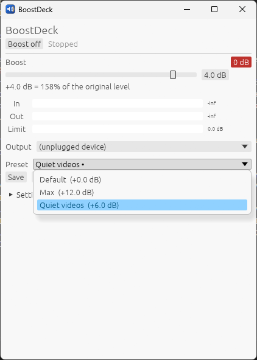
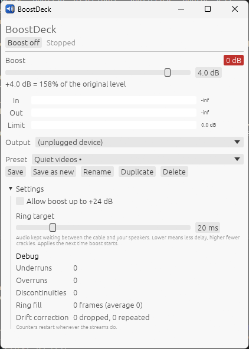

A Windows desktop app that boosts every app's sound past 100% — with an always-on limiter so nothing clips. It routes all system audio through a virtual cable, processes it in real time, and plays the result on your real speakers or headphones. No audio driver, no code signing.
A single window: a boost switch, a dB slider capped at +12 dB, input / output / limiter meters, an output device picker, and named presets. Advanced tuning and live debug counters sit in a collapsed settings section.



Windows has no public hook for boosting the whole mixer, so BoostDeck makes the VB-Cable virtual device the default output, captures it, processes it, and renders to the speakers you picked — about 35–80 ms end to end. On exit, the original default device is put back.
Four threads — UI, control, capture, render — with MMCSS-priority audio threads that never allocate, lock, or log, talking through a lock-free ring and atomics only.
30 ms gain smoothing, a soft clip at 70% of the ceiling, and a −1 dBFS limiter — tested so random input at any gain up to +24 dB never exceeds the ceiling.
The cable and the speakers run on separate clocks; BoostDeck drops or repeats one frame in a thousand to hold the buffer within ±10 ms, so delay never creeps up.
Switches the default output through the undocumented IPolicyConfig COM interface, and restores it on exit, on a panic, or on the next launch if a crash left it switched.
Always-on limiter, a +12 dB cap with a warned +24 dB unlock, a one-click 0 dB panic button, and a safe start that never resumes above +6 dB.
JSON presets with a backup fallback and schema migration, shipped as a v1.0.0 MSI installer and a portable zip on GitHub Releases.
The code and the v1.0.0 installer are on GitHub. Happy to walk through the real-time design, the drift correction, or the routing edge cases.